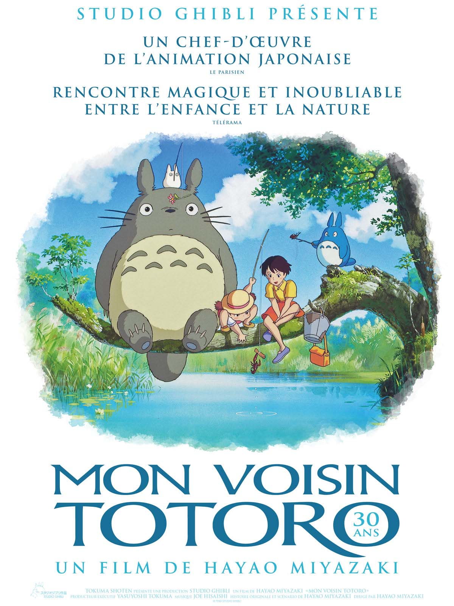
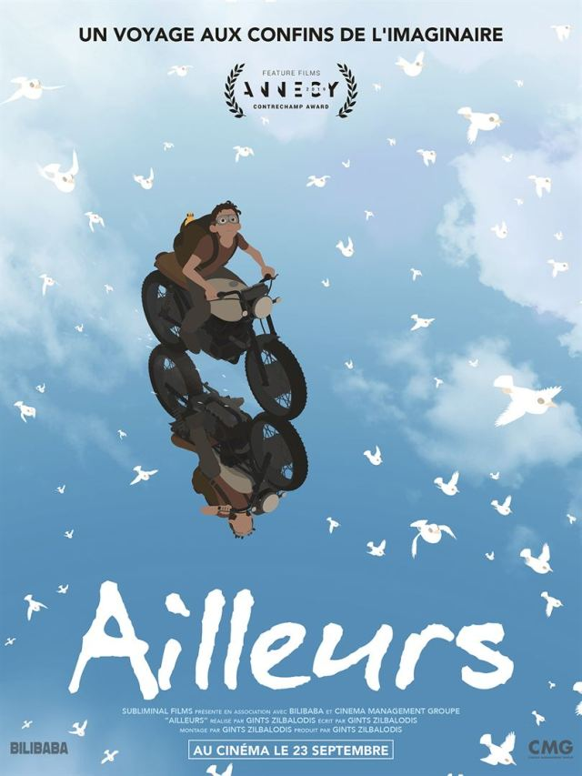
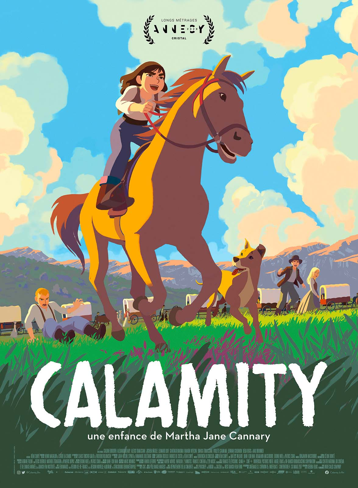
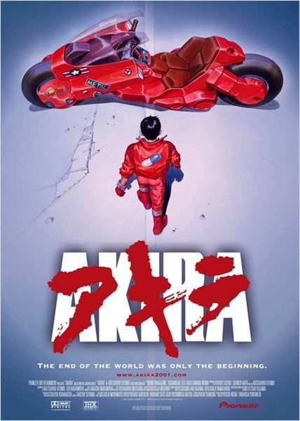
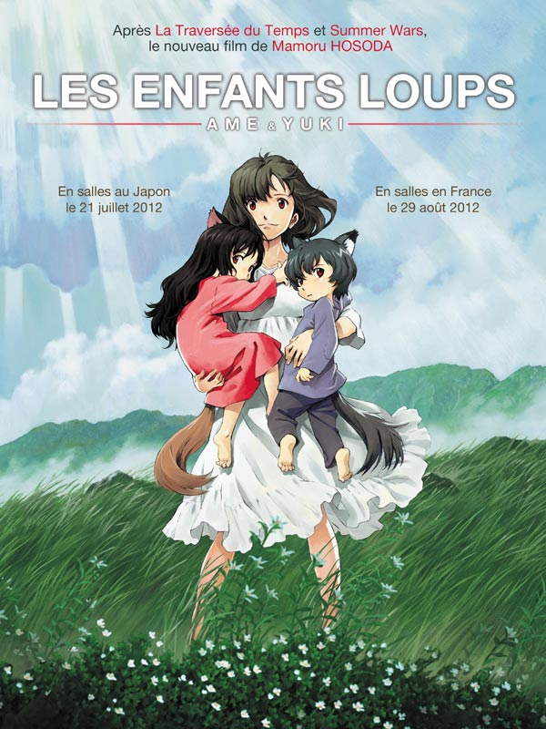
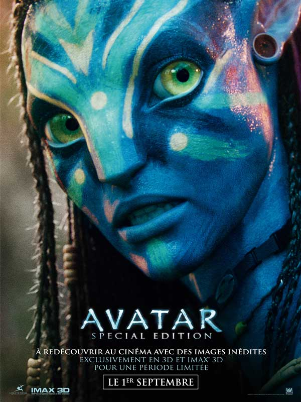

Jurassic World
L'Indominus Rex, un dinosaure génétiquement modifié,
pure création de la scientifique Claire Dearing, sème la
terreur dans le fameux parc d'attraction. Les espoirs de
mettre fin à cette menace reptilienne se portent alors sur
le dresseur de raptors Owen Grady et sa cool attitude.

Mon voisin Totoro
Deux petites filles, Mei, 4 ans, et Satsuki, 10 ans,
s'installent dans une grande maison à la campagne
avec leur père pour se rapprocher de l'hôpital où séjourne
leur mère. Elles découvrent la nature tout autour de la
maison et, surtout, l'existence de créatures merveilleuses,
les Totoros, avec qui elles deviennent très amies.

Ailleurs
Un jeune garçon se réveille suspendu à un arbre après un accident d’avion. Au loin une grande forme menaçante s’approche de lui. Pour la fuir il se réfugie à l’entrée d’une caverne où l’étrange forme ne parvient pas à le suivre. Dans cette caverne, le jeune homme trouve une carte et une moto qui le poussent à prendre la route pour essayer de rejoindre, de l’autre côté de l’île, le port et la civilisation.

Calamity
1863, dans un convoi qui progresse vers l’Ouest avec l’espoir d’une vie meilleure, le père de Martha Jane se blesse. C’est elle qui doit conduire le chariot familial et soigner les chevaux. L’apprentissage est rude et pourtant Martha Jane ne s’est jamais sentie aussi libre.

Akira
Tetsuo, un adolescent ayant vécu une enfance difficile, est la victime d'expériences visant à développer les capacités psychiques qui dorment en chacun de nous. Ainsi doté d'une puissance que lui même ne peut imaginer, Tetsuo décide de partir en guerre contre le monde qui l'a opprimé. Dès lors, Il se retrouve au coeur d'une légende populaire qui annonce le retour prochain d'Akira, un enfant aux pouvoirs extra-ordinaires censé délivrer Tokyo du chaos...

Les Enfants Loups
Une jeune femme timide, Hana, s'éprend d'un homme solitaire qui s'avère être un homme-loup, le dernier de son espèce. Vivant pleinement leur histoire d'amour, ils donnent naissance à deux enfants : une fille nommée Yuki, et un garçon appelé Ame. Lorsque l'homme-loup disparaît un jour brutalement, Hana se retranche avec ses enfants dans un petit village de campagne afin de protéger le secret de ses petits.

Avatar
Malgré sa paralysie, Jake Sully, un ancien marine immobilisé dans un fauteuil roulant, est resté un combattant au plus profond de son être. Il est recruté pour se rendre à des années-lumière de la Terre, sur Pandora, où de puissants groupes industriels exploitent un minerai rarissime destiné à résoudre la crise énergétique sur Terre.
Blanche Neige, les souliers rouges et les sept nains
Des princes transformés en nains viennent à l’aide d’une princesse dont la beauté est cachée dans ses souliers. Ici, le conte de fées s’amuse de notre obsession du paraître. Mais comme dans tous les contes, c’est l’amour qui sauvera tous les personnages.
Croc-Blanc
Croc-Blanc est un fier et courageux chien-loup. Après avoir grandi dans les espaces enneigés et hostiles du Grand Nord, il est recueilli par Castor Gris et sa tribu indienne. Mais la méchanceté des hommes oblige Castor-Gris à céder l’animal à un homme cruel et malveillant. Sauvé par un couple juste et bon, Croc-Blanc apprendra à maîtriser son instinct sauvage et devenir leur ami.
Dragon 3
Harold est maintenant le chef de Berk au côté d’Astrid et Krokmou, en tant que dragon, est devenu le leader de son espèce. Ils réalisent enfin leurs rêves de vivre en paix entre vikings et dragons. Mais lorsque l’apparition soudaine d’une Furie Éclair coïncide avec la plus grande menace que le village n’ait jamais connue, Harold et Krokmou sont forcés de quitter leur village pour un voyage dans un monde caché dont ils n’auraient jamais soupçonnés l’existence.
Frankenweenie
Après la mort soudaine de Sparky, son chien adoré, le jeune Victor fait appel au pouvoir de la science afin de ramener à la vie celui qui était aussi son meilleur ami. Il lui apporte au passage quelques modifications de son cru… Victor va tenter de cacher la créature qu’il a fabriquée mais lorsque Sparky s’échappe, ses copains de classe, ses professeurs et la ville tout entière vont apprendre que vouloir mettre la vie en laisse peut avoir quelques monstrueuses conséquences…
Fritzi
Leipzig, Allemagne de l’Est, 1989. Pendant l’été, Sophie, la meilleure amie de Fritzi part en vacances en lui confiant son chien adoré, Sputnik. A la rentrée des classes, Sophie est absente et sa famille a disparu. Avec Sputnik, Fritzi entreprend de traverser clandestinement la frontière pour retrouver celle qui leur manque tant. Une aventure dangereuse... et historique !
Le Garçon et la Bête
Shibuya, le monde des humains, et Jutengai, le monde des Bêtes... C'est l'histoire d'un garçon solitaire et d'une Bête seule, qui vivent chacun dans deux mondes séparés. Un jour, le garçon se perd dans le monde des Bêtes où il devient le disciple de la Bête Kumatetsu qui lui donne le nom de Kyuta. Cette rencontre fortuite est le début d'une aventure qui dépasse l'imaginaire…

Le Roi Lion
Au fond de la savane africaine, tous les animaux célèbrent la naissance de Simba, leur futur roi. Les mois passent. Simba idolâtre son père, le roi Mufasa, qui prend à cœur de lui faire comprendre les enjeux de sa royale destinée. Mais tout le monde ne semble pas de cet avis. Scar, le frère de Mufasa, l'ancien héritier du trône, a ses propres plans. La bataille pour la prise de contrôle de la Terre des Lions est ravagée par la trahison, la tragédie et le drame, ce qui finit par entraîner l'exil de Simba. Avec l'aide de deux nouveaux amis, Timon et Pumbaa, le jeune lion va devoir trouver comment grandir et reprendre ce qui lui revient de droit…

Les Noces Funèbres
Au XIXe siècle, dans un petit village d'Europe de l'est, Victor, un jeune homme, découvre le monde de l'au-delà après avoir épousé, sans le vouloir, le cadavre d'une mystérieuse mariée. Pendant son voyage, sa promise, Victoria, l'attend désespérément dans le monde des vivants. Bien que la vie au Royaume des Morts s'avère beaucoup plus colorée et joyeuse que sa véritable existence, Victor apprend que rien au monde, pas même la mort, ne pourra briser son amour pour sa femme.
Wonder Woman 1984
Suite des aventures de Diana Prince, alias Wonder Woman, Amazone devenue une super-héroïne dans notre monde. Après la Première guerre mondiale, direction les années 80 ! Cette fois, Wonder Woman doit affronter deux nouveaux ennemis, particulièrement redoutables : Max Lord et Cheetah.

Coraline
Hana et ses deux enfants, Ame et Yuki, vivent discrètement dans un coin tranquille de la ville. Leur vie est simple et joyeuse, mais ils cachent un secret : leur père est un homme-loup. Quand celui-ci disparaît brutalement, Hana décide de quitter la ville pour élever ses enfants à l'abri des regards. Ils emménagent dans un village proche d'une forêt luxuriante…

Zootopie
Zootopia est une ville qui ne ressemble à aucune autre : seuls les animaux y habitent ! On y trouve des quartiers résidentiels élégants comme le très chic Sahara Square, et d’autres moins hospitaliers comme le glacial Tundratown. Dans cette incroyable métropole, chaque espèce animale cohabite avec les autres. Qu’on soit un immense éléphant ou une minuscule souris, tout le monde a sa place à Zootopia !